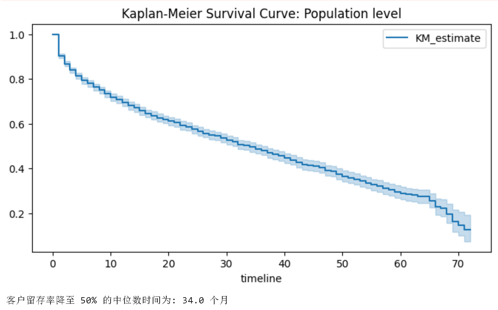
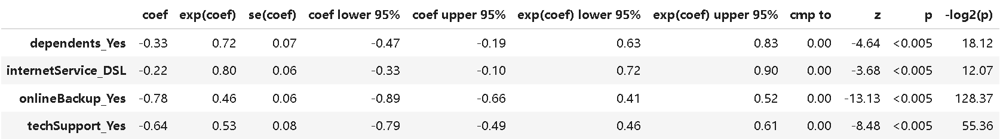
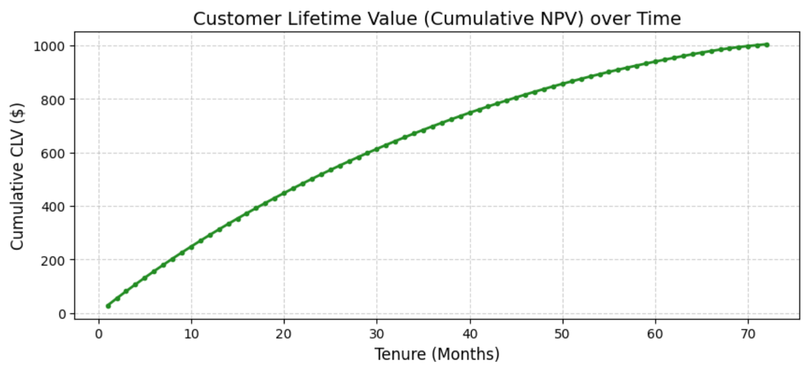

从分布式工程到商业净现值（NPV）的完整决策链路
利用 PySpark 构建工业级数据管道，通过 StructType 严格模式确保 21 个字段在分布式内存中的类型安全。剔除低流动性样本，聚焦于按月付费的核心互联网客群。
schema = StructType([StructField("Churn", StringType(), True), ...])
df_spark = spark.read.schema(schema).csv("ibm_telecom_data.csv")
# 转换为生存分析要求的二值化数值 (1/0)
df_clean = df_spark.withColumn("Churn_Label", when(col("Churn") == "Yes", 1).otherwise(0))不预设概率分布，通过非参数方法拟合客户在网时长。分析发现该客群表现出明显的阶梯状下降趋势。

结合 Cox 比例风险模型归因风险因子，并利用 AFT 模型量化增值服务对生命周期的加速效能。

基于 Cox 模型预测的生存概率，结合财务贴现率（WACC），推导高净值客户的累积终身价值增长路径。

调节以下参数，实时观察生存策略改善如何直接转化为商业利润的增长。